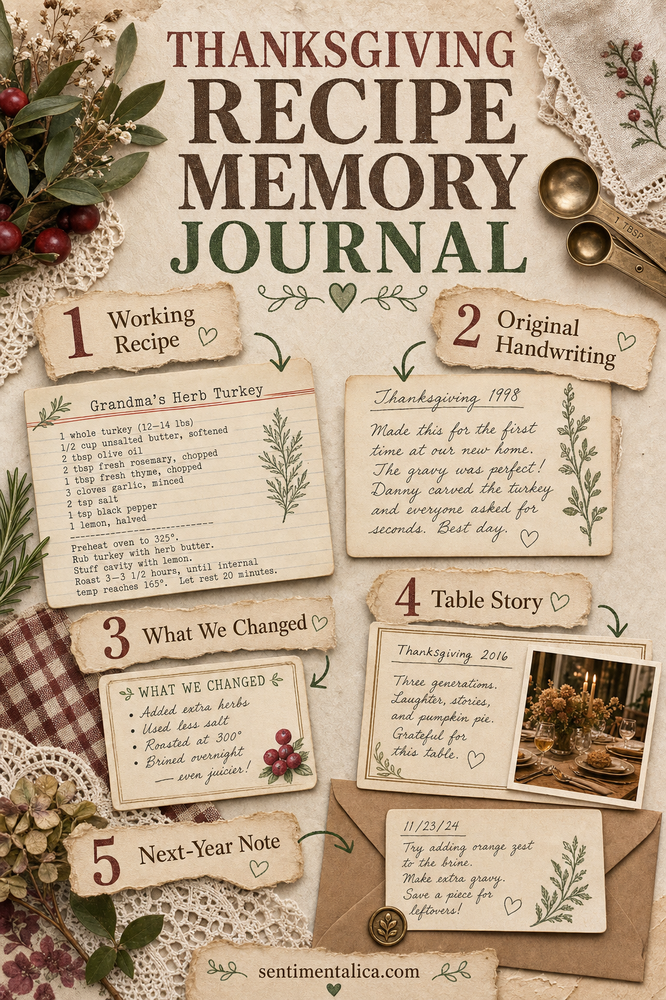

A family recipe is rarely just a list of ingredients. It carries the handwriting of the person who taught you, the pan everyone expects to see, the substitution nobody admits making, and the story repeated while something simmers.
A Thanksgiving recipe journal gives those details a home. It can be practical enough to use in the kitchen and personal enough to become part of the holiday. Begin with one dish this year. A meaningful collection can grow slowly.

Give every recipe two pages
Use the left page for the working recipe: ingredients, temperature, timing, and steps. Reserve the right page for everything that does not fit into instructions: who made it, what changed, which serving dish belongs with it, and how the kitchen smelled.
This separation keeps the recipe readable while allowing the memory side to become layered. If the journal may sit near food, write the practical page clearly and avoid fragile embellishments along its outer edge.
Preserve the original handwriting
If you have an old recipe card, photograph or scan it before attaching anything. Print a copy for the journal and store the original safely. Do not clean up crossed-out quantities, unusual spelling, or notes squeezed into the margin. Those marks show that the recipe was used.
When asking someone for a recipe, invite them to write at least the title or one instruction by hand. Even a small line such as “add more until it looks right” can hold a familiar voice.
Record the recipe people actually make
Published versions often differ from family practice. Add the true pan size, the ingredient that is routinely doubled, and the step everyone skips. Note whether “one cup” means a measuring cup or a favorite old mug.
Create a small box called “What we changed this year.” This turns every Thanksgiving into a useful test rather than asking one recipe card to remain perfect forever.
Add the table story
Write one paragraph about how the dish appeared at the table. Who carried it in? Who took the first serving? Was it finished, forgotten in the kitchen, or even better the next morning? A candid photograph or place-card fragment can sit beside the story.
If the memory is complicated, let it be complicated. A journal can hold affection, absence, changing traditions, and the year a recipe did not work. Honest pages will matter more than an idealized holiday record.
Use dividers that follow the day
Instead of organizing only by food type, arrange the journal through the rhythm of Thanksgiving:
- The day before: breads, pies, sauces, and preparation notes.
- The morning: breakfast, oven schedule, and dishes assembled early.
- The table: mains, sides, drinks, and serving memories.
- Afterward: leftovers, sandwiches, soups, and next-day rituals.
This structure makes the book useful during planning and helps preserve the sequence of the day, not just its menu.
Choose materials that belong near food
Kraft paper, cream card, cotton ribbon, recipe-box dividers, grocery-list fragments, and photocopied linens all suit the subject. Use deep brown or muted green as an anchor, then add cranberry, brass, or squash gold as a restrained accent.
A transparent pocket can hold recipe clippings without gluing them down. A fold-out is useful for long instructions. Small tabs make frequently used dishes easier to find. Keep bulky lace and loose fibers away from pages you will consult while cooking.
End each year with a kitchen note
After the holiday, write what you would begin earlier, make differently, or gladly repeat. Record who joined the table and which new dish earned a place next year. Add one ordinary kitchen photograph after everything is over.
The most valuable recipe note may be the one that helps someone recreate not only the dish, but the feeling around it.
Leave several blank pages between sections. The journal is not meant to be finished in one sitting. It should have room for new handwriting, altered traditions, and recipes that have not entered the family yet.
Discover more gentle ways to preserve everyday stories in the Sentimentalica journal.